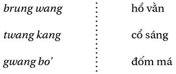

Chương 9
Trong những khu rừng khủng khiếp đầy hổ và “mọi” đó, như các nhà văn xa lạ (xa lạ với các tộc người này) thường thích viết, để tự dọa mình, dã thú ở khắp nơi và ta không bao giờ phân biệt được ai với ai nữa. Sách vở (một quyển sách về rừng sâu?) đã cho ta gặp, ngoài những người khác, cô Tlaktlo xinh đẹp, sống với hổ (là bố mẹ cô chăng?), một nơi chốn nhập nhằng nơi người ta không bao giờ có thể biết hết được mọi thứ. Con hổ không chỉ là một con hổ.
Ở xứ Giarai người ta kể rằng, khởi nguyên con hổ đã sống trong rừng, nhưng nó không biết săn mồi; nó không tấn công người. Khi nó tìm được thịt, nó đến nhờ con người nấu chín hộ cho nó; có thế nó mới ăn được. Con mèo thì sống với chúng ta, nhưng nó lại biết săn mồi; nó đã quan sát thấy con nhện ngốn sống con mồi như thế nào và nó bắt chước. Chính con mèo đã dạy cho con hổ biết cách tự nuôi sống một mình. Từ đó hổ mới săn mồi và ăn sống; nó kính trọng và sợ mèo, người thầy của nó.
Trước khi có những tàn phá của chiến tranh hủy hoại mọi thứ sống, các loài thú họ mèo ở Đông Dương rất phong phú, khiến các tay săn người Pháp ở thuộc địa rất thích thú vui sướng. Các loài được biết khá rõ và thuộc ba nhóm họ mèo: những con lớn (giống Panthera, beo hay báo, tùy cách gọi), những con cỡ trung bình (giống Profelis), những con nhỏ (giống Felis, mèo). Là những người chăm chú quan sát mọi sự sống, người Giarai tinh tế trong việc phân biệt các giống loài, thực vật cũng như động vật, khiến họ quan tâm hơn cả. Đặc biệt trong trường hợp loài họ mèo, được chia nhỏ như sau:

römung bleo , nhỏ hơn loại trên một chút;
römung hwai, lông hung hơn;
römung cönaih , nhỏ hơn các loại trên;
(Tất cả các römung này đều là các Panthera tigris )
jjörang pötu’ , báo “sao” (Panthera pardus, tấn công người);
jjöorang ju’ , báo “đen” (cũng là loài trên, bị chứng nhiễm mélanin);
jjörung asau , báo “chó”, bằng cỡ con chó lớn (Profelis nebulosa);
jjörang mönu’
, báo “gà”, (một loài mèo hoang);
jjörang tok bok , cỡ bắp chân, sống trên cây, ăn chim và sóc (Felis bengalensis, hay mèo-hổ);
(Tất cả các con vật dãy thứ hai cũng có thể liệt vào tên gọi chung là römung ; chúng cùng một dòng).
Trong tất cả các dã thú trong rừng Giarai, römung , hổ là thứ đáng sợ hơn cả (tôi không nói đến voi, mạnh hơn, nhưng lại có thể thuần hóa); người ta không săn hổ. Thợ săn- mögap và thợ săn- römung phải tránh nhau; mỗi bên có đất săn riêng của mình.
Một người dân làng có thể giết một con hổ, nếu hổ bắt gia súc của anh ta (bò, trâu). Trong trường hợp đó, anh ta tự biện bạch: “Món nợ của mày đã hết. Mày bắt của ta một con trâu, nên ta giết mày. Từ nay đừng tấn công ta nữa!” Nói xong, anh ta cúng cho hổ một chiếc vòng.
Trong trường hợp của người đi săn chuyên nghiệp, mögap , thì nghiêm trọng hơn, bởi anh ta đã giao ước với các yang dlei (thần-rừng), cũng còn gọi là yang-römung (thần-hổ). Sự giao ước nhị thức này, hàng năm được cử hành lại, là một giao ước không tấn công lẫn nhau, nó thiết lập một mối liên hệ giữa các thần rừng và người đi săn mà các thần phải bảo trợ, nổi bật trong lời khấn dài được đọc trong dịp này:
tôi khấn, tôi cầu,
tôi gọi ngài Ji ngài Jung
mẹ của Ju’ mẹ của Bak
đây là rượu ghè
và gà của ngươi
...
tôi khấn, tôi cầu
núi Tling núi Tlang
đèo Tong A’, sông Röbai
rừng Jörang, núi Höring
núi Trol, núi Doan
và tất cả các rừng tôi thường đi
Hãy đến ăn thịt này, uống rượu này
phù hộ cho chúng tôi
không đau ốm, không sốt
phù hộ chúng tôi, bảo vệ chúng tôi
...
Người cầu khấn gọi ra (theo vần hay theo sự lân cận về địa lý) các tên rừng và núi, nghĩa là tên các vị thần ngự ở đó và nhìn thấy anh ta đi qua khi anh đi săn, sẽ nhận ra anh. Anh kể các thứ anh dâng cúng, cho nên anh phải được che chở. Che chở khỏi cái gì? Khỏi các con hổ và các thần, tức cũng là một thôi - đặc biệt khỏi các cô gái-rừng nhập nhằng có thể mê hoặc, ám vào anh. Làm như vậy, anh đã tự cấm mình không được tấn công hổ và các vị thần. Quả nhiên, giữa anh và các thế lực của rừng không cùng một dòng, nhưng anh cầu mong sự tiếp tay của họ. Còn về “ngài Jung” được nói đến ở đầu lời khấn, ta sẽ gặp lại ngay sau đây.
Người đi săn, thường quen cầu đến yang dlei , không được bắn một con hổ. Nếu xảy ra chuyện đó, thì sẽ có một “sự vụ” (theo nghĩa pháp lý của từ này), một sự vụ phải giải quyết càng sớm càng hay, nếu không hổ sẽ gây chuyện với anh ta. Người đi săn, đuổi theo một con mồi (tôi dịch theo một “ngữ án” truyền thống), gặp một con hổ và buộc phải giết nó, anh ta phải đền bồi sự xúc phạm ấy, nếu không sẽ phải là con mồi cho hổ về sau. Anh ta xin lỗi về tội ngộ sát này, giống như người chiến binh xin lỗi về việc giết chết một kẻ thù. Anh ta phải trả “giá một mạng” tương đương giá một con người, hay mười lăm con trâu. Lúc đó cần phải có bốn nhân chứng-bảo lãnh, hai về phía người đi săn, hai đại diện cho phía con hổ. Họ họp nhau để làm lễ tang cho hổ, trong đó phải cúng một ghè rượu và một con lợn; các con trâu “đền mạng” được tượng trưng bằng các hình gọt bằng thân chuối; nếu có hứa “đền mạng” bằng chiêng, thì người ta dùng các hình mẫu, nặn bằng đất sét. Một người được cử cầu cúng chính thức đọc lời khấn:
Hôm qua, hôm kia, người này đã giết mày. Bây giờ nó đền nợ. Sự vụ thế là xong. Hãy ở yên, đừng giận chúng tôi. Chúng tôi đã mang tất cả những gì cần để đền bù, đủ số lượng; đừng tấn công chúng tôi, cả con cháu chúng tôi nữa.
Người cầu khấn ném một chiếc vòng lên xác hổ.
Người thợ săn nào cũng bị ràng buộc bởi những điều cấm kỵ thiêng kiêng (những kiêng cữ), cấm giết một số con thú nào đó: cóc, thằn lằn, kỳ đà, khỉ... - quan trọng và phổ biến hơn cả là hổ... và con cù lần bé nhỏ mà chốc nữa chúng ta sẽ thấy. Nếu chẳng may anh ta giết phải con vật cấm, anh ta phải đền bồi, bằng gà và ché rượu, nếu không thì con vật sẽ trả oán - và con vật bé nhỏ nhất không phải là ít nguy hiểm nhất trong chuyện trả thù...

“Giá mạng” hổ, như vừa nói, bằng giá mạng người. Thật đáng chú ý, và không phải là ngẫu nhiên! Nếu, trong các vùng này của Đông Dương, rất có thể việc hiến tế trâu đã thay thế việc hiến tế người, con hổ vẫn được coi là ngang hàng với con người; ranh giới giữa hai giống này được vượt qua nhẹ nhàng một mặt trong huyền thoại và, mặt khác, trong các hoang tưởng của những người nhìn thấy những người đàn ông-hổ, hay những người đàn bà-hổ. Người ta không săn hổ cũng như người ta không săn người; nhiều lắm là, cả hai, có thể thách nhau đấu tay đôi, giữa những chiến binh với nhau (hay giữa những người đi săn với nhau).
Sau đây là một câu chuyện Sre nói về sömri , (người-hổ, có thể có cả hai hình dạng):
Một cô gái hẹn với một chàng trai trong chòi rẫy; người con trai đã hẹn sẽ đến gặp cô ở đấy. Lúc cậu ta sắp đi thì có ông chú đến chơi, cậu phải tiếp và mời chú uống rượu. Một người đàn ông đã nghe được lời hẹn, anh ta đi ra rẫy thay anh chàng kia và đội lốt chàng kia; người đàn ông đó là một sömri ăn thịt. Cô gái tưởng đó là bạn cô, cô cho anh ta lên chòi. Họ bắt chấy cho nhau; lúc đó cô nhận ra không phải là người cô chờ. Đêm xuống, cô sợ. Cô giả vờ cần đi ngoài, cầm lấy một cây củi đang cháy và đi ra ngoài. Cô để cây củi ở một gốc cây, bảo nó nói thay hộ cô; cô cũng nhờ tất cả các cây cỏ cô gặp như vậy. Cô trở về nhà.
Ngạc nhiên thấy cô gái đi lâu quá, người đàn ông cũng đi ra, anh ta tìm. “Em ở đây này”, cây thứ nhất nói; “em đến ngay đây”, cây thứ hai nói, để cho anh chàng đỡ sốt ruột. Từ cây này qua cây khác, anh ta đi lang thang quanh rẫy. Anh ta không nhìn thấy, giẫm vào một gốc cà tím - cô gái đã quên dặn cà tím. Cà tím bảo: “Đấy là các cây nói hộ cô gái, còn cô ta thì đã đi về nhà rồi.” Người đàn ông muốn theo cô ta; một con sông lớn ngăn anh. Là hổ hay là người, anh ta cũng không vượt qua được; anh ta biến thành ong bầu, bay qua bên kia sông, lại trở thành người, đến nhà cô gái, đứng dưới nhà. Một sợi tóc dài của cô gái lọt qua sàn nhà; người đàn ông bứt lấy, bỏ chạy. Cô gái chết.
Cô gái được chôn cất. Gia đình cô trở về làng. sömri đào quan tài lên, mang về nhà, cắm một cái cần vào để hút lấy nước từ xác rữa. Chàng trai trẻ tìm được dấu vết người-hổ, đuổi theo đến nhà hắn ta, nhìn thấy quan tài. “Chính mày đã giết chết bạn gái ta!”Anh ta giết hắn, tàn sát mọi người trong nhà, trừ một người lấy vợ ở vùng người Raglai - vì vậy ở vùng người Raglai vẫn còn có các sömri . Từ đó người Sre không bao giờ hẹn nhau trong rừng (Hs. 77).
Một dị bản của đề tài này khác bản trước từ chỗ đám tang:
... Ở nghĩa trang, khi mọi người đã ra về hết, người đàn ông góa đặt thanh gươm của mình lên mộ vợ và nằm xuống một bên. Đêm người-hổ đến. “Có cả thịt sống lẫn thịt chết ở đây!” Hắn liếm người đàn ông, rồi liếm quan tài; lưỡi gươm cắt đứt lưỡi hắn, hắn chạy trốn. Người đàn ông thấy cảnh ấy nhưng không nhận ra được mặt của sömri. Anh ta mở quan tài, hồi sinh cho cô vợ, mang cô về nhà.
Để biết ai là sömri trong làng mình, anh ta tổ chức một cuộc đá gà, mọi người đều đến xem, rồi tới một cuộc đấu dê; người-hổ cười. “Này, sao lưỡi anh bị đứt thế? - Tôi bị một cái vây cá cắt đấy mà. - Mày nói láo, chính mày đã ăn vợ ta!” Anh ta giết chết nó (Hs. 83).
Không ai nghi ngờ sự tồn tại của các người-hổ, nghĩa là những con hổ làng, dưới dạng người, hay những người đã đi quá xa trong thỏa ước của họ với hổ. Dù thế nào đi nữa, thì những sinh vật ấy vẫn phải ở trong rừng. Trong phần lớn các trường hợp, họ thuộc giống đực, vì là thợ săn. Khó biết được ai là sömri trong làng; khi không thấy có người chết bất bình thường, thì người ta cứ làm như không có sömri và người ta đẩy chúng sang các tộc người láng giềng. “Dĩ nhiên, ở chỗ chúng tôi không có sömri nữa; nhưng [hẳn chúng phải có ở một nơi nào đó] ở chỗ người Raglai (tộc người Nam Đảo, ở phía nam người Sre) thì bao giờ cũng có.” Tính cách sömri là gia truyền; cho nên khi một người nào đó bị phát hiện, thì phải tàn sát cả gia đình - người Giarai thì chú trọng hơn đến việc săn lùng những người phù thủy gieo họa, như ta sẽ thấy sau đây.
Cảnh thanh gươm không thể không nhắc ta nhớ đến tai nạn đã xảy đến với nàng Thảo (Hj. 110) bị thương vì lưỡi gươm của người yêu; anh chàng này, quá tò mò vì các cuộc thăm viếng của cô gái-rừng, ngỡ rằng đã gặp phải một con yêu tinh sẽ hút máu mình - cây gươm đặt nằm bên cạnh vừa là một cách tự vệ vừa để thử thách. Người ta không tấn công hổ, và các đồng loại của nó, trừ phi trong trường hợp tự vệ chính đáng.
Người Giarai không có từ tương đương với sömri của Sre, nhưng họ không thiếu loại người-hổ; họ gọi chúng bằng cách nói vòng “bạn của hổ”; hay yang dlei (trong trường hợp này, có nghĩa gần như là “sinh linh hoang dã”), hoặc nữa là “các öi Jung ” ( öi là giống đực của ya’ , từ dùng để gọi những người đáng kính trọng, thuộc tuổi ông bà; Jung giữ vai trò tên riêng). Và anh bạn Drit của chúng ta đã từng gặp:
Hôm đó Drit xin bà chuẩn bị cho cậu cơm, muối và ớt, vì cậu sắp đi săn.
Cậu đi, đi mãi. Đêm đến. Ngủ ở đâu? Cậu leo lên cây và ngồi trên chỗ chạng. Rạng sáng cậu thấy một ông già và một bà già Jung đi lấy nước. Ngồi trên cây, Drit hót như chim: “Cúc cù cu con bồ câu trên chạng cây cúc cù cu!” Ông bà già Jung ngây ngất, chưa bao giờ họ nghe tiếng hót hay như vậy. Họ lao về nhà tìm đồ cúng để đặt ở gốc cây. Họ trở lại với những tấm dệt rất đắt tiền và một ghè rượu. Họ uống rượu, say, nhảy múa, rồi ngủ tại chỗ. Drit leo xuống, lấy các tấm dệt, quay về nhà.
Người anh trai của cậu cũng muốn được như vậy. Drit không hé ra điều gì; nhưng bà thì biết. “Đừng đi, cháu ạ!”. Anh ta nằn nì. “Nếu cháu quá muốn thế, thì cứ đi, nhưng phải nhịn cười!” Người anh trai làm như Drit, leo lên cây, hót. Ông bà Jung mang đồ cúng đến, uống, say, nhảy múa, rồi ngã vào nhau. Người anh cả phá lên cười. “Ôi ông ơi, ôi bà ơi, chính nó lấy hết các tấm dệt của ta, chính nó lừa ta!” Họ leo lên cây, bắt anh chàng và ăn sạch, xé xác ngon lành (Hj. 40).
Người “anh” của Drit ở đây chỉ được tạo ra để nhấn mạnh khía cạnh đơn nhất của Drit, không ai sánh bằng, là mẫu người đi săn, thận trọng và kính cẩn. Vị trí của Drit trên cây và hót như chim làm cho cậu ta tương đương với Tokbok, nàng Si ( Hj. 30 ), cũng tức là Mẹ Rú. Có thể, trong câu chuyện nghe được từ miệng trẻ con này, tiếng hót của Drit trên cây là lấy trực tiếp từ Hj. 30 và gắn vào đây, chuyển từ bà tiên già sang cậu trai; nhưng điều đó không có gì quan trọng nếu ta nhớ những gì trí tưởng tượng vẫn tự động liên kết. Những con người-hổ, biết nói, có những tấm dệt, uống rượu và ngốn thịt sống, được gọi là Jung, cái tên ta đã nghe người thợ săn cầu khấn khi tiến hành nghi thức giao ước với các thế lực của rừng xanh - hổ, các thần, các sinh linh trung gian, người “hoang dã nhập nhằng”.
Bây giờ tôi xin nhường lời cho một người Giarai già kể trong một cuộc trò chuyện (đây không còn là một “huyền thoại”) một con người đã có thể “thật sự” trở thành hổ như thế nào:
Ở vùng Êđê, có những người đàn ông kết nghĩa với hổ. Những người đó chào vợ trước khi rời nhà đi săn: “Ở nhà cho nghiêm chỉnh nghe!” Vào đến trong rừng của hổ, họ bôi gạo đỏ lên lưỡi và như vậy họ có thể săn mồi như hổ. Không tìm được mồi, họ đến gần các làng, nhìn thấy một con lợn, họ vồ lấy bằng các móng vuốt của họ, mang lên núi, ăn thịt. Trong lúc đó, ở làng, người ta nhìn thấy những dấu vết một con hổ đã bắt mất một trong những con lợn của họ; họ tìm thấy con lợn đã chết và mang về làng (vẫn là con lợn ấy). Bọn “hổ” chia nhau con mồi; một con mang thịt lợn về cho vợ. Y bị vợ trách. “Anh cứ đi miết, lúc nào cũng đi săn! Đêm nay một con hổ đã bắt mất con lợn mẹ dành cho tôi; người ta đã tìm lại được nó. Anh, anh bảo anh đi săn, nhưng chỉ có đi lang thang thôi! Đến đây mà ăn thịt lợn, ngoài hiên kia. Còn anh, anh mang gì về nào, con mồi của anh đâu? - Tôi cũng có thịt đấy. Cứ nhìn trong gùi tôi xem!” Người vợ nhìn vào gùi: chỉ toàn những miếng vỏ cây.
Câu chuyện này có thật. Người Trung, người Kreng, người Bana cũng kể như vậy. Các ông Jung, các yang dlei, ngày xưa nhiều lắm.
Những người lính ở đồn Mdrak lạc trong rừng hổ, phía núi Mẹ Bồng Con; họ mất tích, nhưng ngày nay có những con người-hổ ở đấy. Khi người ta muốn trở thành hổ, thì sẽ thành hổ; khi muốn trở thành người, thì sẽ thành người. Chỉ cần đặt gạo đỏ vào dưới lưỡi; nuốt lấy, thì sẽ thành hổ. Một đại đội lính Pháp đuổi theo những người Việt Minh; cả hai bên đều lạc vào rừng. Chẳng có gì ăn cả. “Lạy thần núi thần nước, thần Du thần Dei, hãy thương chúng tôi!” Họ thấy gạo đỏ, họ ăn, thế là biến thành hổ.
Ở chỗ người Giarai cũng có chuyện đó; ở chỗ người Mdhur thậm chí người ta thấy một người đàn bà trở thành hổ cái và giữ nguyên như vậy (Tl. 7a. 67).
Món “gạo đỏ” này không phải là thứ gạo ta vẫn biết và trồng; đây là một giống tưởng tượng có quả thóc “vằn” (như hổ), một giống lương thực hoang dã nó biến người ta thành hoang dã. Cũng giống như không gian của làng có thể lại trở thành rừng (sau khi dân làng đã dời đi), cũng như một con vật nuôi có thể lại trở thành thú hoang, vậy thì cũng có thể hình dung một con người - một giống loài trong các giống loài sống khác - cũng có thể lại trở thành hoang dại, tức là hổ, con vật duy nhất xứng với con người, nhất là nếu đấy là (và đây là trường hợp trong câu chuyện của chúng ta) một người thợ săn.
Tôi xin lưu ý một điểm quan trọng, mà sau đây tôi sẽ còn trở lại: trước khi ra đi, người thợ săn dặn vợ phải “ở nhà”; bà không được đi ra khỏi nhà để anh ta có thể gặp con mồi. Nhưng anh ta, anh ta đi tìm gì trong rừng? Tất cả các jung, römung, yang dlei , mà anh ít nhiều đồng hóa với họ - “nhiều” là trong trường hợp của người bị ám, bị một người đàn bà-hổ, hay một cô gái- rừng, hoang tưởng của người thợ săn, làm cho mê đắm, như ta sẽ thấy; có thể điều đó giải thích thái độ gây gổ của người vợ phải ở lại nhà.
Để bảo đảm một cuộc săn có kết quả, phải giao kết với kẻ cạnh tranh - con hổ - hay làm tình với kẻ nữ cạnh tranh - cô gái-rừng, người nữ làm mê đắm mong ước, nữ chủ nhân ở nơi này, nữ chủ nhân của ngôi nhà hoang dã - sau khi đã khóa chặt người nữ chủ nhân của ngôi nhà làng tại nhà bà và tự áp đặt cho mình những kiêng cữ, kiêng không được sờ chân con cu ly bé nhỏ, được đặt gần như ngang hàng với con hổ; cu ly cũng vậy, là vật không nên săn.